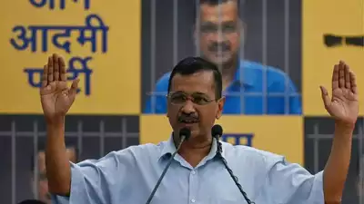

If Virat Kohli comes to Pakistan, he'll forget the hospitality of India': Shahid Afridi amid Champions Trophy 2025 row
As the 2025 Champions Trophy finds itself in a state of limbo following India's reported stance of not travelling to Pakistan, former captain Shahid Afridi has urged the BCCI to think otherwise. Afridi wants India to come and play in Pakistan, as it will not just help the cricketing ties between two nations grow but also give the crowd in his country the opportunity to witness Virat Kohli play.
Shahid Afridi (L) wants Virat Kohli to play in Pakistan.(Getty Images)
Shahid Afridi (L) wants Virat Kohli to play in Pakistan.(Getty Images)
Bilateral cricketing ties between India and Pakistan have been put on hold since 2013. Pakistan recently visited India for last year's 50-overs World Cup, and for the longest time, it was believed that India would return the favour by going and playing in Pakistan.

How did Gautam Gambhir become India's head coach? The story behind his appointment and what happened in BCCI
With no formal coaching experience—Gautam Gambhir has only worked as a mentor with two IPL franchises—and a professional retirement as late as 2019, how did Gambhir become BCCI's choice as India's new head coach? The popular notion is that his role in helping Kolkata Knight Riders win the IPL after a decade-long wait did the trick. The KKR players and the support staff were vocal about Gambhir's role in creating the perfect team environment. True, but that hardly mattered to the BCCI.
How did Gautam Gambhir become India head coach?(PTI)
How did Gautam Gambhir become India head coach?(PTI)
Hindustan Times has learnt that Gambhir’s elevation to India’s head coach position had been in the works for months. It wouldn’t have mattered if KKR hadn’t won the IPL title.

63 missing after landslide sweeps two buses into Trishuli River in Nepal, Kathmandu-Bharatpur flights cancelled
A landslide on the Madan-Ashrit Highway in Nepal early this morning swept two buses carrying 63 people into the Trishuli River. The incident, involving the Kathmandu-bound Angel bus and Ganpati Deluxe, occurred around 3:30 am amid heavy rainfall in the region.
People watch the flooded Bagmati river in Kathmandu, Nepal, Saturday, July 6, 2024.(AP/Representational Image)
People watch the flooded Bagmati river in Kathmandu, Nepal, Saturday, July 6, 2024.(AP/Representational Image)
Indradev Yadav, the Chief District Officer of Chitwan, told ANI that the buses were travelling along the highway when the landslide struck, pushing them off the road and into the raging river below.

Biden reacts to Kamala Harris gaffe and Trump's mockery, 'I know the difference between...'
Donald Trump seized the opportunity to mock President Joe Biden's slip-up during his 'Big Boy' press conference. Following Biden's earlier gaffe of mistakenly referring to Ukrainian President Volodymyr Zelensky as 'President Putin', the POTUS sparked another round of internet mockery with yet another embarrassing moment. As he began to take questions, the president stumbled almost immediately. This time, Biden left the crowd baffled by referring to Vice President Kamala Harris as 'Trump'. “Look, I wouldn’t have picked Vice President Trump to be vice president if I think she’s not qualified to be president,” Biden said. The President was said to be discussing concerns regarding Vice President Kamala Harris's capacity to win against Donald Trump should she be the main contender.
‘Jasprit Bumrah performs and I take the credit…’: India bowling coach says he learns from ‘once-in-a-generation’ bowler
"Eighth wonder of the world". "Once in a generation". "Cheat code". Jasprit Bumrah has got many nicknames in the Indian dressing room. But perhaps the biggest indicator of his greatness is his ability to impart knowledge, even to coaches and seniors who have been associated with the game for decades. Jasprit Bumrah is an institution not just in fast bowling but cricket, in general. The way he thinks about the game, the way he wants to learn, unlearn and keep growing as a cricketer are remarkable. A chat with Bumrah before and after the game is a tutorial in itself.

Reached outer sea off the coast of Vizhinjam
The Vizhinjam international seaport in Kerala received its first mothership on Thursday with a cargo vessel named ‘San Fernando’ from China berthing at the country’s largest trans-shipment port.The 300-metre-long cargo vessel, which set sail from Xiamen port in China, reached the outer sea off the coast of Vizhinjam near Thiruvananthapuram in the early hours of Thursday before being navigated with the help of tugs into the berth and safely moored to the port. The ship was also given a water salute by the four tugs as it approached the port.
NEET-UG paper leak scam: CBI arrests mastermind Rakesh Ranjan'
The Central Bureau of Investigation (CBI) arrested one of the kingpins of the NEET-UG paper leak scandal, Rakesh Ranjan alias Rocky, from Jharkhand's Dhanbad. He was produced in CBI court and was sent to the agency's custody for 10 days.
The CBI had been tracking him since taking over the case. (File)
The CBI had been tracking him since taking over the case. (File)
Linked to the paper leak case in Hazaribagh-Patna, Rocky was traced using advanced technology, the police said. Searches were carried out at four locations in Patna and West Bengal, linked to the accused.

Ex-Karnataka minister B Nagendra taken into ED custody in money laundering probe'
The Enforcement Directorate (ED) took former Karnataka minister and Congress leader B Nagendra into custody in connection with the Valmiki Corporation scam case. The Congress MLA was taken to the ED office in Bengaluru from his residence for questioning, reported PTI quoting people aware of the development.
Former Karnataka minister B Nagendra.(Facebook)
"I'm being brought from my home...I don't know anything," Nagendra told reporters as he was being taken to the ED office.